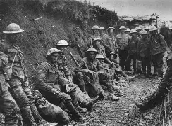

O Choque dos Imperialismos
A Primeira Guerra Mundial não aconteceu por acaso. Ela foi o resultado de décadas de rivalidades econômicas, disputas por colônias (Imperialismo) e um nacionalismo exagerado. Esse clima gerou a Paz Armada: os países não estavam em guerra, mas se armavam até os dentes.
Com o assassinato do arquiduque Francisco Ferdinando em Sarajevo, a complexa rede de alianças (Tríplice Entente contra Tríplice Aliança) foi acionada, arrastando o mundo para um conflito arrastado, violento e marcado pela terrível realidade das linhas de trincheiras.
1. A Guerra Industrializada e as Trincheiras
O otimismo científico da virada do século se converteu em pesadelo no front. A Primeira Guerra Mundial inaugurou a era da mecanização militar. As táticas tradicionais de infantaria tornaram-se obsoletas diante de metralhadoras automáticas, artilharia pesada, tanques de guerra, aviões de combate e os terríveis gases asfixiantes.
Para sobreviver a esse poder de fogo devastador, os exércitos cavaram milhares de quilômetros de valas na terra. A Guerra de Trincheiras congelou as linhas de combate por anos, submetendo os soldados a condições desumanas, convivendo com a lama, doenças, fome e o medo constante da morte generalizada.

A dura realidade das trincheiras: soldados do regimento de Cheshire aguardando o combate na Batalha do Somme (1916).
2. O Fim das Ilusões Europeias
O conflito estendeu-se muito além dos campos europeus, mobilizando colônias e forçando a entrada de potências externas, como os Estados Unidos em 1917. Quando as armas finalmente se calaram em 1918, o mapa global estava permanentemente transformado.
- Queda de Impérios: Quatro grandes impérios desmoronaram com o fim do conflito: o Alemão, o Austro-Húngaro, o Otomano e o Russo.
- Tratado de Versalhes: A imposição de termos extremamente rígidos e humilhantes à Alemanha derrotada acabou não criando uma paz duradoura, mas plantando o ressentimento que alimentaria a Segunda Guerra Mundial décadas depois.
Vídeo Complementar: A Dinâmica da Primeira Guerra
Assista abaixo a uma síntese didática das fases do conflito e de como a tecnologia industrial alterou a história dos combates:
A Grande Guerra estraçalhou a crença ingênua de que o progresso técnico caminharia lado a lado com a evolução moral humana. O conflito deixou mais de 15 milhões de mortos e um continente traumatizado, provando que as máquinas de ferro e a ciência moderna haviam se tornado eficientes fábricas de cadáveres.